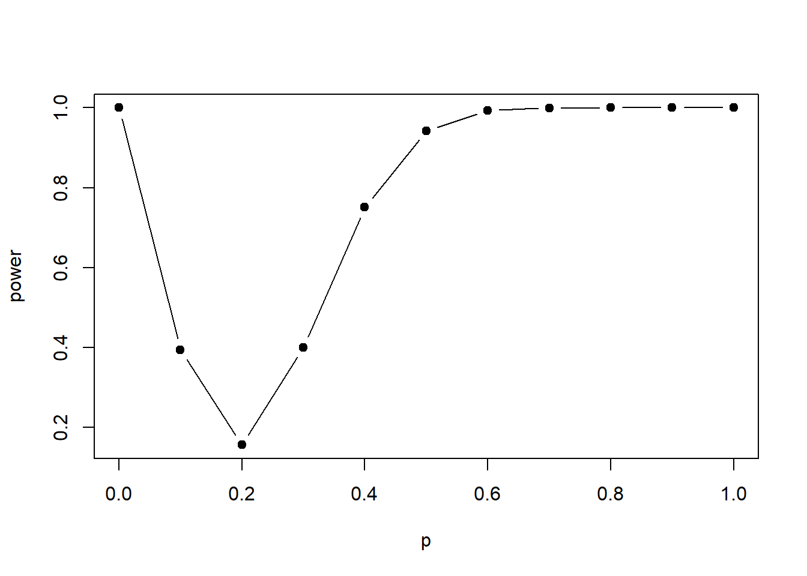
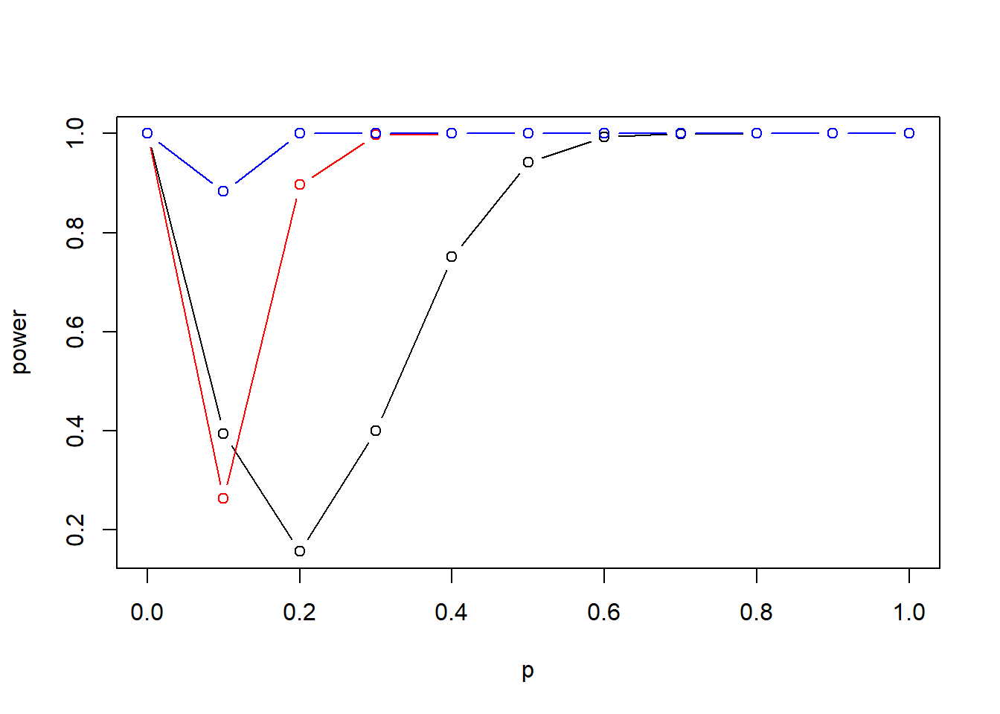
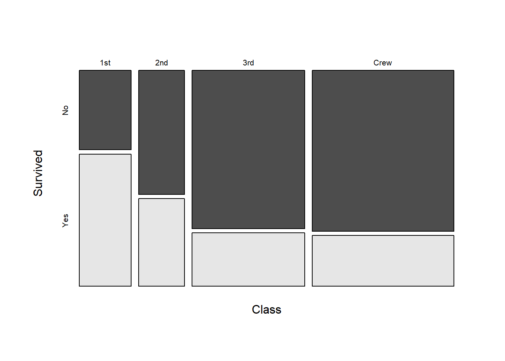

Code
pbinom(1,size=20,prob=0.2) + 1-pbinom(6,size=20,prob=0.2) [1] 0.1558678Soit une proportion \(p\) inconnue d’objets défectueux dans une grande population d’objets. On souhaite tester les hypothèses suivantes: \[ \begin{aligned} \mathcal{H}_0 &: p = 0,2 \\ \mathcal{H}_1 &: p \ne 0,2. \end{aligned} \] On suppose qu’un échantillon aléatoire de \(n=20\) objets est tiré de la population. Soit \(X\) le nombre d’objets défectueux dans l’échantillon aléatoire, on considère un test d’hypothèse qui rejette l’hypothèse nulle si \(X \ge 7\) ou \(X \le 1\).
a) Est-ce que les hypothèses sont simples ou composites? Expliquer.
b) Quelle est la région critique du test?
c) Calculer la taille du test et la probabilité de faire une erreur de type I.
d) Calculer la valeur de la fonction de puissance \(\Pi(p)\) aux points \[ p\in\{0, 0,1, 0,2, 0,3, 0,4, 0,5, 0,6, 0,7, 0,8, 0,9, 1\} \] et tracer la fonction de puissance en utilisant R ou Excel. Quel est le lien entre la fonction de puissance et les probabilités d’erreur de type I et II?
e) Refaire (d) avec une taille d’échantillon de \(n=50\) et \(n=100\). Est-ce que le test semble bon?
f) Suggérer une modification au test pour qu’il demeure significatif avec une taille d’échantillon différente de \(20\).
a) \(\mathcal{H}_0\) est simple et \(\mathcal{H}_1\) est composite.
b) \(\mathcal{C} = \left\{ (x_1,\dots, x_{20}) \in \{0,1\}^n : x_1 + \dots + x_n \in \{ 0,1\} \cup \{7,\dots,20 \}\right \}\)
c) 0,1558678
d) \(1 - \Pi(p)\)
e) Non
f) Région critique devrait dépendre de \(n\).
a) L’hypothèse nulle est simple étant donné que \(\Theta_0 = \{ 0,2\}\) ne contient qu’une seule valeur. La contre-hypothèse est composite étant donné que \(\Theta_1 = [0, 0,2) \cup (0,2, 1]\) contient plus d’une valeur de \(\theta\).
b) Les mesures \(X_1, \ldots , X_{20}\) sont des variables aléatoires Bernoulli mutuellement indépendantes. La région critique est donc donnée par \[ \mathcal{C} = \left\{ (x_1,\dots, x_{20}) \in \{0,1\}^n : x_1 + \dots + x_n \in \{ 0,1\} \cup \{7,\dots,20 \}\right \}. \]
c) Parce que l’hypothèse nulle est simple, la taille du test et la probabilité d’erreur de type I sont les mêmes. \[ \alpha =\Pr(X \le 1, X \ge 7 | p = 0,2). \] Sous l’hypothèse nulle, \(X = X_1 + \cdots + X_{20}\) est une distribution binomiale de taille \(n=20\) et probabilité \(p=0,2\). Ainsi, \(\alpha\) peut être calculé comme suit: \[ \begin{aligned} \Pr(X \le 1, X \ge 7) &= 1 - \Pr(2 \le X \ge 6) \\ &= 1 - \sum_{x=2}^6 \Pr(X=x) \\ &= 1 - 0,8441322 \\ &= 0,1558678 \end{aligned} \]
pbinom(1,size=20,prob=0.2) + 1-pbinom(6,size=20,prob=0.2) [1] 0.1558678d) La fonction de puissance à \(p_1\in [0,1]\) arbitraire est donnée par \[ \Pi(p_1) = \Pr(X \le 1, X \ge 7 | p =p_1) \] et peut être calculée par le fait que \(X \sim Bin(n=20, p=p_1)\). On répète la même démarche qu’en (c) en changeant la probabilité \(p\) de la loi Binomiale pour chacune des valeurs de \(p_1\). Avec R, on trouve
p <- seq(from=0,to=1,by=0.1)
power <- pbinom(1,size=20,prob=p) + 1-pbinom(6,size=20,prob=p)
power [1] 1.0000000 0.3941331 0.1558678 0.3996274 0.7505134 0.9423609 0.9935345
[8] 0.9997390 0.9999982 1.0000000 1.0000000La courbe de la fonction de puissance peut être tracée avec les points \((\Pi(p_1), p_1)\). En R, elle peut être tracée comme suit:
plot(p,power,type="b")
points(p,power,pch=16) 
La puissance à \(p=0,2\) est égale à la probabilité d’erreur de type I \(\alpha\), alors que pour $ p ,2$, la probabilité d’erreur de type II \(\beta\) est donnée par \(1 - \Pi(p)\).
e) La seule différence avec (d) est que maintenant \(Y\) est une distribution binomiale de taille \(n \in \{50,100\}\). La fonction de puissance à \[ p\in\{0, 0,1, 0,2, 0,3, 0,4, 0,5, 0,6, 0,7, 0,8, 0,9, 1\} \] pour \(n=50\) et \(n=100\) est calculée de la même façon qu’en (d) en changeant la taille \(n\) de la loi Binomiale pour \(50\) et \(100\).
En R, on trouve:
(power.50 <- pbinom(1,size=50,prob=p) + 1-pbinom(6,size=50,prob=p)) [1] 1.0000000 0.2635590 0.8967945 0.9975067 0.9999860 1.0000000 1.0000000
[8] 1.0000000 1.0000000 1.0000000 1.0000000(power.100 <- pbinom(1,size=100,prob=p) + 1-pbinom(6,size=100,prob=p)) [1] 1.0000000 0.8831661 0.9999220 1.0000000 1.0000000 1.0000000 1.0000000
[8] 1.0000000 1.0000000 1.0000000 1.0000000De la même façon qu’en (d), le graphique ci-dessous trace les fonctions de puissance pour \(n=5\) (en rouge) et \(n=100\) (en bleu), avec la puissance pour \(n=20\) (en noir).
plot(p, power,type="b")
points(p,power.50,type="b",col="red")
points(p,power.100,type="b",col="blue") 
Bien que la puissance se comporte bien si \(p \ne 0,2\) (i.e., elle s’approche de 1), l’erreur de type I est complètement inacceptable: elle est aussi grande que \(0,999\) quand \(n=100\). Le test n’est pas du tout utile pour ces tailles d’échantillon.
f) La région de rejet devra dépendre de \(n\), puisque plus la taille d’échantillon augmente, plus d’objets défectueux seront présents sous \(\mathcal{H}_0\), simplement car plus d’objets sont inspectés. Sous l’hypothèse nulle, le nombre total d’objets défectueux va être une distribution binomiale de taille \(n\) avec probabilité \(p=0,2\). Les valeurs critiques pourraient être choisies comme des quantiles de la distribution binomiale.
Soit \(X\) une variable aléatoire dont la fonction de densité de probabilité est \[ f(x; \theta) = \theta x^{\theta - 1}, \quad 0 < x < 1. \] On suppose que \(\theta\) peut prendre exclusivement les valeurs \(\theta = 1\) ou \(\theta = 2\).
a) Trouver une statistique exhaustive pour le paramètre \(\theta\) de cette distribution.
b) On teste l’hypothèse \(\mathcal{H}_0: \theta = 1\) versus \(\mathcal{H}_1: \theta = 2\) à partir d’un échantillon aléatoire \(X_1, X_2\). Si la région critique est \(C = \{(x_1, x_2); x_1 x_2 \geq 3/4\}\), calculer la probabilité de faire une erreur de type I (\(\alpha\)) et la probabilité de faire une erreur de type II (\(\beta\)).
a) \(\prod_{i = 1}^n X_i\)
b) \(\alpha = 0,034\), \(\beta = 0,886\)
a) On a \[ \begin{aligned} f(x_1, \dots, x_n;\theta) &= \prod_{i=1}^n f(x_i;\theta) \\ &= \theta^n\prod_{i=1}^nx_i^{\theta-1} \\ &= \left( \theta^n \prod_{i=1}^n x_i^\theta \right) \left( \prod_{i=1}^n x_i^{-1} \right) \\ &= g(t(x_1, \dots, x_n); \theta) h(x_1, \dots, x_n), \end{aligned} \] où \[ \begin{aligned} g(y; \theta) &= \theta^n y^n \\ t(x_1, \dots, x_n) &= \prod_{i=1}^n x_i \\ h(x_1, \dots, x_n) &= \prod_{i=1}^n x_i^{-1}. \end{aligned} \] Ainsi, par le théorème de factorisation de Fisher–Neyman, \(T(X_1, \dots, X_n) = \prod_{i = 1}^n X_i\) est une statistique exhaustive pour \(\theta\).
b) D’une part, l’erreur de type I consiste à rejeter l’hypothèse \(\mathcal{H}_0\) alors qu’elle est vraie. La probabilité de faire ce type d’erreur, notée \(\alpha\), correspond donc à la probabilité que la statistique du test se retrouve dans la région critique lorsque l’hypothèse \(\mathcal{H}_0\) est vraie. On a donc \[ \begin{aligned} \alpha &= \Prob{X_1X_2 \geq \frac{3}{4}; \theta = 1} \\ &= \iint_C f_{X_1 X_2}(x_1, x_2; 1) dx_2 dx_1, \end{aligned} \] où \(C = \{(x_1, x_2); x_1 x_2 \geq 3/4\}\). Or, \[ f_{X_1 X_2}(x_1, x_2; \theta) = f_{X_1}(x_1; \theta) f_{X_2}(x_2; \theta) = \theta^2 x_1^{\theta - 1} x_2^{\theta - 1}, \] d’où \(f_{X_1 X_2}(x_1, x_2; 1) = 1\), \(0 < x_1, x_2 < 1\).
\[ \begin{aligned} \alpha &= \int_{3/4}^1 \int_{3/(4 x_1)}^1 dx_2 dx_1 \\ &= \int_{3/4}^1 \left( 1 - \frac{3}{4x_1} \right) dx_1 \\ &= \frac{1}{4} + \frac{3}{4} \ln \frac{3}{4} \\ &\approx 0,034. \end{aligned} \]
D’autre part, l’erreur de type II consiste à ne pas rejeter l’hypothèse \(\mathcal{H}_0\) alors qu’elle est fausse. La valeur \(\beta\) est donc la probabilité que la statistique se retrouve à l’extérieur de la région critique lorsque l’hypothèse \(\mathcal{H}_0\) est fausse, c’est-à-dire \[ \begin{aligned} \beta &= \Prob{X_1 X_2 < \frac{3}{4}; \theta = 2} \\ &= 1 - \Prob{X_1 X_2 \geq \frac{3}{4}; \theta = 2}\\ &= 1 - \iint_C f_{X_1 X_2}(x_1, x_2; 2) dx_2 dx_1. \end{aligned} \]
Dès lors, puisque \(f_{X_1 X_2}(x_1, x_2; 2) = 4 x_1 x_2\),
\[ \begin{aligned} \beta &= 1 - \int_{3/4}^1 \int_{3/(4x_1)}^1 4 x_1 x_2 dx_2 dx_1\\ &= \frac{9}{16} - \frac{9}{8}\ln \frac{3}{4} \\ &\approx 0,886. \end{aligned} \]
Soit \(X_1, \dots, X_n\) un échantillon aléatoire tiré d’une distribution Poisson avec paramètre \(\lambda\) inconnu. Soit \(\lambda_0\) et \(\lambda_1\) des valeurs spécifiques telles que \(0 < \lambda_0 < \lambda_1\) et on souhaite tester les hypothèses suivantes: \[ \begin{aligned} \mathcal{H}_0 \: : \: \lambda & = \lambda_0, \\ \mathcal{H}_1 \: : \: \lambda & = \lambda_1. \end{aligned} \]
Astuce: On sait que si \(Z_1 \sim \mathcal{P}(\mu_1)\) est indépendante de \(Z_2 \sim \mathcal{P}(\mu_2)\), alors \(Z_1 +Z_2 \sim \mathcal{P}(\mu_1 + \mu_2)\).
a) Montrer que le test optimal au seuil \(\alpha\) rejette \(\mathcal{H}_0\) quand \(\bar X_n > c\). Spécifier la valeur de \(c\).
b) Montrer que le test \(\delta\) qui minimise \(\alpha(\delta) + \beta(\delta)\) rejette \(\mathcal{H}_0\) quand \(\bar X_n > c^\star\). Trouver la valeur de \(c^\star\).
c) On suppose que \(n=20\), \(\lambda_0 = 1/20\) et \(\lambda_1=1/10\). Calculer la valeur de la constante \(c\) en a) quand \(\alpha = 0,08\) et calculer les probabilités d’erreur de type I et II.
d) On suppose que \(n=20\), \(\lambda_0 = 1/20\) et \(\lambda_1=1/10\). Calculer la valeur de \(c^\star\) en b) et déterminer la valeur minimale que peut atteindre \(\alpha(\delta) + \beta(\delta)\). Quelles sont les probabilités d’erreur de type I et II?
a) Démo
b) Démo. \(C^* = \frac{\lambda_1 - \lambda_0}{\ln{\lambda_1} - \ln{\lambda_0}}\).
c) \(c = 0,1\)
d) \(\alpha = 0,264\) et \(\beta = 0,6766764\).
a) Ici, la fonction de distribution de l’échantillon est donnée par \[ f(\boldsymbol{x}; \lambda) = e^{-\lambda n} \frac{\lambda^{x_1 + \dots + x_n}}{x_1! \times \dots \times x_n!} \] et le rapport de vraisemblance est \[ \frac{f(\boldsymbol{x}; \lambda_1)}{f(\boldsymbol{x}; \lambda_0)} = e^{-\lambda_1 n + \lambda_0 n} \left(\frac{\lambda_1}{\lambda_0}\right)^{x_1 + \dots + x_n} = \exp\left\{ -(\lambda_1 - \lambda_0)n + n \bar x_n \ln\left(\frac{\lambda_1}{\lambda_0}\right) \right\}. \] Parce que les hypothèses sont simples, le Lemme de Neyman–Pearson dit que le test optimal rejette l’hypothèse nulle si pour une valeur critique \(k>0\), \[ \frac{f(\boldsymbol{x}; \lambda_1)}{f(\boldsymbol{x}; \lambda_0)} > \frac{1}{k} \] ce qui est équivalent à \[ \exp\left\{ -(\lambda_1 - \lambda_0)n + n \bar x_n \ln\left(\frac{\lambda_1}{\lambda_0}\right) \right\} > \frac{1}{k}. \] Prendre le logarithme des deux côtés de l’inégalité donne \[ \bar x_n > \underbrace{\frac{-\ln(k)/n + (\lambda_1 -\lambda_0)}{\ln(\lambda_1) - \ln(\lambda_0)}}_{=c}. \] Sous l’hypothèse nulle, on note que \(n\bar X_n = X_1 + \dots + X_n\) est une distribution Poisson avec moyenne \(n\lambda_0\). Ainsi, la valeur \(c\) devrait être choisie telle que \[ \Pr( n \bar X_n > nc | \lambda = \lambda_0) = \alpha \] pour un seuil \(\alpha\), c’est-à-dire que \(nc\) est le quantile \(1-\alpha\) de la distribution Poisson avec moyenne \(n\lambda_0\). À noter que le seuil de signification ne sera peut-être pas exact étant donné que la distribution Poisson est discrète.
b) Ici, le test optimal rejette l’hypothèse nulle si \[ \frac{f(\boldsymbol{x}; \lambda_1)}{f(\boldsymbol{x}; \lambda_0)} = \exp\left\{ -(\lambda_1 - \lambda_0)n + n \bar x_n \ln\left(\frac{\lambda_1}{\lambda_0}\right) \right\} > 1, \] c’est-à-dire lorsque \[ \bar x_n > \underbrace{\frac{\lambda_1 -\lambda_0}{\ln(\lambda_1) - \ln(\lambda_0)}}_{=c^*}. \]
c) Si \(n=20\) et \(\lambda_0 = 1/20\), \(n\bar X_n\) est une loi de Poisson avec moyenne \(1\) sous l’hypothèse nulle. Le quantile de niveau \(1-0,08 = 0,92\) de cette distribution est \(2\) puisque
| x | Masse | Répartition |
|---|---|---|
| 0 | 0.368 | 0.368 |
| 1 | 0.368 | 0.736 |
| 2 | 0.184 | 0.920 |
Vu que \[ \begin{aligned} \Pr( n \bar X_n > nc | \lambda = \lambda_0) &= \alpha \\ 1-\Pr( n \bar X_n \leq nc | \lambda = \lambda_0) &= \alpha \end{aligned}, \] la valeur critique \(c\) égale \(2/20 = 0,1\) et le test rejette \(\mathcal{H}_0\) si \(n \bar X_n > 2\). La probabilité d’erreur de type I est donc \[ \Pr(n\bar X_n > 2 | \lambda = 1/20) = 0,08. \] La probabilité d’erreur de type II est donnée par \[ \Pr(n \bar X_n \le 2 | \lambda =1/10) = 0,6766764 \] et peut être calculée par le fait que quand \(\lambda =1/10\), \(n\bar X_n\) est une loi de Poisson avec moyenne \(2\).
d) Ici, la valeur de \(c^\star\) est donnée par \[ \frac{\lambda_1 -\lambda_0}{\ln(\lambda_1) - \ln(\lambda_0)} = \frac{1/20}{\ln(1/10) - \ln(1/20)} = 0.07213, \] donc le test rejette l’hypothèse nulle si \[ n\bar X_n > nc^* = 20\times 0.07213 = 1.4427, \] i.e. si \(n \bar X_n > 1\). La probabilité d’erreur de type I est \[ \Pr(n \bar X_n > 1 | \lambda =1/20) = 0.264. \] La probabilité d’erreur de type II est \[ \Pr(n \bar X_n \le 1 | \lambda =1/10) = 0.406, \] et la valeur minimale que peut atteindre \(\alpha(\delta) + \beta(\delta)\) est \[ \alpha(\delta) + \beta(\delta) = 0.264 + 0.406 = 0.67. \]
On suppose que la durée de vie d’un pneu en kilomètres a une distribution normale de moyenne \(30000\) et d’écart type \(5000\). Le fabricant du nouveau pneu Super Endurator X24 prétend que la durée de vie moyenne de ce pneu est bien supérieure à \(30000\) km. Afin de vérifier les prétentions du fabricant, on testera \(\mathcal{H}_0: \mu \leq 30000\) versus la contre-hypothèse \(\mathcal{H}_1: \mu > 30000\) à partir de \(n\) observations indépendantes \(x_1, \dots, x_n\). On rejettera \(\mathcal{H}_0\) si \(\bar{x} \geq c\). Trouver les valeurs de \(n\) et de \(c\) de sorte que la probabilité de faire une erreur de type I en \(\mu = 30000\) est \(0,01\) et que la probabilité de faire une erreur de type II en \(\mu = 35000\) est \(0,02\).
\(n = 19 \text{ ou } 20\), \(c = 32658\)
On sait que \(\bar{X} \sim \mathcal{N}(\mu, 5000^2/n)\). Or, \[ \begin{aligned} \alpha &= \prob{\bar{X} \geq c; \mu = 30 000} \\ &= 1 - \Phi\left( \frac{\sqrt{n}(c - 30000)}{5000} \right) \\ \end{aligned} \]
d’où
\[ \begin{aligned} z_\alpha &= \frac{\sqrt{n}(c-30000)}{5000}. \end{aligned} \] De même, \[ \begin{aligned} \beta &= \prob{\bar{X} < c; \mu = 35000}\\ &= \Phi\left( \frac{\sqrt{n}(c - 35000)}{5000} \right), \\ \end{aligned} \]
d’où
\[ \begin{aligned} z_{1 - \beta} &= \frac{\sqrt{n}(c-35000)}{5000}. \end{aligned} \] On trouve dans une table de la loi normale que \(z_\alpha = z_{0,01} = 2,326\) et que \(z_{1 - \beta} = z_{0,98} = -2,05\). En résolvant pour \(n\) et \(c\) le système à deux équations et deux inconnues, on obtient \(n = 19,15\) et \(c = 32658\). Aux fins du test, on choisira donc une taille d’échantillon de \(n =19\) ou \(n = 20\).
On suppose que le poids en grammes des bébés à la naissance au Canada est distribué selon une loi normale de moyenne \(\mu = 3315\) et de variance \(\sigma^2 = 525^2\), garçons et filles confondus. Soit \(X\) le poids d’une fillette née au Québec. On suppose \(X \sim \mathcal{N}(\mu_X, \sigma_X^2)\).
a) Donner l’expression de la statistique du test \(\mathcal{H}_0: \mu_X \le 3315\) versus \(\mathcal{H}_1: \mu_X > 3315\) (les bébés sont en moyenne plus gros au Québec) si \(n = 11\) et \(\alpha = 0,01\). (La valeur de \(\sigma_X^2\) est inconnue ici.)
b) Calculer la valeur de la statistique et tirer une conclusion si l’échantillon de poids de 11 fillettes nées au Québec est le suivant:
knitr::kable(c(3119, 2657, 3459, 3629, 3345, 3629, 3515, 3856, 3629, 3345, 3062))| x |
|---|
| 3119 |
| 2657 |
| 3459 |
| 3629 |
| 3345 |
| 3629 |
| 3515 |
| 3856 |
| 3629 |
| 3345 |
| 3062 |
d) Énoncer la statistique du test et la région critique du test \(\mathcal{H}_0: \sigma_X^2 \ge 525^2\) versus \(\mathcal{H}_1: \sigma_X^2 < 525^2\) (moins de variation dans le poids des bébés nés au Québec) si \(\alpha = 0,05\).
e) Calculer la statistique du test à partir des données de la partie b). Quelle est la conclusion à tirer de ce résultat?
a) \(T = \frac{\bar{X} - 3315}{\sqrt{S^2/11}}\)
b) \(t = 0,699 < t_{10, 0,01}\)
c) \(\frac{(10) S^2}{525^2}\)
d) \(y = 4,104 > \chi_{10, 0,05}^2\)
a) Il s’agit d’un simple test sur une moyenne. La statistique pour un petit échantillon est \[ \begin{aligned} T &= \frac{\bar{X} - \mu_X}{\sqrt{S^2/n}} = \frac{\bar{X} - 3315}{\sqrt{S^2/11}} \sim t_{10}. \end{aligned} \] On rejette \(\mathcal{H}_0\) si \(t > t_{10, 0,01} = 2,764\).
b) On commence par calculer les statistiques \(\bar{X}\) et \(S_X^2\), \[ \bar{X} = 3385,91 \quad \text{ et } \quad S_X^2 = 113108,49. \] On trouve que \(t = 0,699 < t_{10, 0,01} = 2,764\), on ne rejette donc pas \(\mathcal{H}_0\) à un seuil de signification de \(1~\%.\)
d) On a un test unilatéral à gauche sur une variance pour lequel la statistique est \[ \begin{aligned} Y = \frac{(n-1) S^2}{\sigma^2} = \frac{(10) S^2}{525^2} \sim \chi^2_{10}. \end{aligned} \] On rejette $ _0$ si \(y < \chi_{10, 0,95}^2 = 3,94\).
e) Ici, \(y = 4,104 > 3,94\). On ne rejette donc pas \(\mathcal{H}_0\).
Soit \(Y\) le poids en grammes d’un garçon né au Québec et supposons que \(Y \sim \mathcal{N}(\mu_Y, \sigma_Y^2)\). On a les observations suivantes:
knitr::kable(c(4082, 3686, 4111, 3686, 3175, 4139, 3686, 3430, 3289, 3657,4082))| x |
|---|
| 4082 |
| 3686 |
| 4111 |
| 3686 |
| 3175 |
| 4139 |
| 3686 |
| 3430 |
| 3289 |
| 3657 |
| 4082 |
Refaire les questions de l’exercice 6.5. Les réponses obtenues dans ces deux exercices suggèrent-elles d’autres hypothèses à explorer? Faire les tests appropriés le cas échéant.
a) \(t = 4,028 > t_{10, 0,01}\)
b) \(y = 4,223 > \chi_{10, 0,95}^2\)
c) tests sur les moyennes et les variances
a) La statistique à utiliser est la même qu’à l’exercice 6.5.
b) On commence par calculer les statistiques \(\bar{Y}\) et \(S_Y^2\), \[ \bar{Y} = 3729,36 \quad \text{ et } \quad S_Y^2 = 116388,85. \] On trouve que \(t = 4,028 > t_{10, 0,01} = 2,764\), on rejette donc \(\mathcal{H}_0\) à un seuil de signification de \(1~\%\).
c) La statistique à utiliser est la même qu’à l’exercice 6.5.
d) On a \(y = 4,223 > 3,94\). On ne rejette donc pas \(\mathcal{H}_0\).
e) Les moyennes semblent être différentes entre les deux groupes, mais les variances égales. On commence par vérifier si le ratio des variances est près de \(1\). On teste \[ \begin{aligned} \mathcal{H}_0 &: \sigma_X^2 / \sigma_Y^2 = 1 \\ \mathcal{H}_1 &: \sigma_X^2 / \sigma_Y^2 \ne 1 \end{aligned} \]
La statistique à utiliser pour ce test est \[ \begin{aligned} F = \frac{S_Y^2 / \sigma_Y^2}{S_X^2 / \sigma_X^2} \sim \mathcal{F}_{m-1, n-1} \end{aligned} \]
Avec les données des deux numéros, on trouve que \(f = 0,97\). À un seuil de signification de \(\alpha = 10\)%, on trouve \(\mathcal{F}_{10, 10, \, 0,05} = 2,98\) et \(\mathcal{F}_{10, 10, \, 0,95} = 0,34\). On ne rejette donc pas \(\mathcal{H}_0\) au seuil de \(10\)%. Ainsi, on peut tester \[ \begin{align*} \mathcal{H}_0 &: \mu_X = \mu_Y \\ \mathcal{H}_1 &: \mu_X \ne \mu_Y \end{align*} \]
en supposant les variances égales. La statistique utilisée pour ce test est \[ \begin{align*} W &= \frac{(\bar{X} - \bar{Y}) - (\mu_X - \mu_Y)}{S_p} \sim t_{n+m-2}, \\ \text{où} \, S_p^2 &= \frac{S_X^2 (n-1) + S_Y^2 (m - 1)}{n + m - 2}. \end{align*} \]
Avec les données des deux numéros, on trouve que \(w = -1,0139\). À un seuil de signification de \(\alpha = 5~\%\), on trouve \(t_{20, \, 0,025} = -2,086\) et \(t_{20, \, 0,975} = 2,086\). On ne rejette donc pas \(\mathcal{H}_0\) au seuil de \(5~\%\). On n’a donc pas assez d’information pour conclure que les fillettes et les garçons nés au Québec ont un poids moyen différent les uns des autres au seuil \(\alpha = 5~\%\).
Parmi les statistiques relevées par l’Organisation mondiale de la santé (OMS) on compte la concentration en \(\mu g/m^3\) de particules en suspension dans l’air. Soit \(X\) et \(Y\) les concentrations en \(\mu g/m^3\) de particules en suspension dans l’air aux centres-villes de Melbourne (Australie) et Houston (Texas), respectivement. On suppose que \(X\) et \(Y\) sont normalement distribuées. À partir de \(n = 13\) observations de la variable aléatoire \(X\) et \(m = 16\) observations de la variable aléatoire \(Y\), on souhaite tester \(\mathcal{H}_0: \mu_X \ge \mu_Y\) versus \(\mathcal{H}_1: \mu_X < \mu_Y\).
a) Définir la statistique du test et la région critique en supposant égales les variances des distributions de \(X\) et \(Y\). Utiliser un seuil de signification de \(5~\%\).
b) Si \(\bar{x} = 72,9\), \(s_X = 25,6\), \(\bar{y} = 81,7\) et \(s_Y = 28,3\), quelle est la conclusion pour ce test?
c) Calculer la valeur \(p\) de ce test. Est-elle conforme à la conclusion en b)?
d) Tester si l’hypothèse de variances égales faite en a) est valide avec un niveau de confiance de \(90~\%\).
a) \(T = [(\bar{X} - \bar{Y}) - (\mu_X - \mu_Y)]/\sqrt{((n-1)S_X^2 + (m-1)S_Y^2) (n^{-1} + m^{-1})/(n + m - 2)}\), \(T \sim t(n + m - 2)\)
b) \(t = -0,838 > t_{0,05}(27)\)
c) \(p = 0,2047\)
d) \(f = 0,8311 < f_{0,05}(12, 15)\)
a) Nous avons un test unilatéral à gauche sur la différence entre deux moyennes. En supposant égales les variances des deux populations, on a \(X \sim \mathcal{N}(\mu_X, \sigma^2)\) et \(Y \sim \mathcal{N}(\mu_Y, \sigma^2)\). On sait que \(\bar{X} \sim \mathcal{N}(\mu_X, \sigma^2/n)\) et \(\bar{Y} \sim \mathcal{N}(\mu_Y, \sigma^2/m)\), d’où un estimateur de \(\mu_X - \mu_Y\) sur lequel baser un test est \[ \bar{X} - \bar{Y} \sim \mathcal{N}\left( \mu_X - \mu_Y, \frac{\sigma^2}{n} + \frac{\sigma^2}{m} \right). \] La variance \(\sigma^2\) est toutefois inconnue. Un estimateur de ce paramètre est l’estimateur combiné, soit la moyenne pondérée des estimateurs de chaque échantillon: \[ S_p^2 = \frac{(n - 1) S_X^2 + (m - 1) S_Y^2}{n + m - 2}. \] Or, \((n + m - 2) S_p^2/\sigma^2 \sim \chi^2(n + m - 2)\). Par conséquent,
\[\begin{align*} T &= \frac{\frac{(\bar{X} - \bar{Y}) - (\mu_X-\mu_Y)}{\sigma \sqrt{n^{-1} + m^{-1}}}}{\sqrt{\frac{(n + m - 2) S_p^2}{\sigma^2}}} \\ &= \frac{(\bar{X} - \bar{Y}) - (\mu_X-\mu_Y)}{ \sqrt{\frac{(n-1) S_X^2 + (m-1) S_Y^2}{n + m - 2} \left( \frac{1}{n} + \frac{1}{m} \right)}} \sim t(m + n - 2). \end{align*}\]
On rejette \(\mathcal{H}_0: \mu_X \ge \mu_Y\) en faveur de \(\mathcal{H}_1: \mu_X < \mu_y\) si \(t \leq -t_{0,05}(n + m - 2)\).
b) Avec les données de l’énoncé, la valeur de la statistique développée en a) est \(t = -0,838\), alors que le 95e centile d’une loi \(t\) avec \(13 + 16 - 2 = 27\) degrés de liberté est \(t_{0,05}(27) = 1,703\). Puisque \(\abs{t} < 1,703\), on ne rejette pas \(\mathcal{H}_0\).
c) On a \(p = \prob{T < -0,838}\), où \(T \sim t(27)\). À l’aide de R, on trouve
pt(-0.838, df = 27) [1] 0.204694Puisque \(p = 0,2047 > 0,05\), on ne rejette pas \(\mathcal{H}_0\). La conclusion est évidemment la même qu’en a).
d) On souhaite tester l’égalité de deux variances, c’est-à-dire \(\mathcal{H}_0: \sigma_X^2 = \sigma_Y^2\) versus \(\mathcal{H}_1: \sigma_X^2 \ne \sigma_Y^2\). Pour ce faire, on se base sur le fait que \((n-1) S_X^2/\sigma_X^2 \sim \chi^2(n - 1)\) et que \((m-1) S_Y^2/\sigma_Y^2 \sim \chi^2(m - 1)\). Ainsi, sous \(\mathcal{H}_0\) (c’est-à-dire lorsque \(\sigma_X^2 = \sigma_Y^2\)),
\[ F = \frac{(n-1) S_X^2/(n - 1)}{(m-1) S_Y^2/(m - 1)} \sim F(n - 1, m - 1). \]
On rejette \(\mathcal{H}_0\) si la valeur de la statistique est supérieure au \(100(1 - \alpha/2)\)e centile d’une loi \(F\) avec \(n - 1\) et \(m - 1\) degrés de liberté. Ici, on a \(f = 0,8311\) et \(f_{0,05}(12, 15) = 2,48\), et pour l’autre côté, la valeur de \(f_{0,95}(12, 15)\) (ou de \(f_{0,05}(15, 12)\)) n’est pas donnée dans la table, mais on peut la trouver avec R comme suit:
qf(0.05,12,15) [1] 0.3821387Puisque \(0.38 < 0,8311 < 2,48\), on ne rejette donc pas \(\mathcal{H}_0\). L’hypothèse des variances égales est donc raisonnable.
Un fabricant de dentifrice prétend que \(75~\%\) de tous les dentistes recommandent son produit à ses patients. Sceptique, un groupe de protection des consommateurs décide de tester \(\mathcal{H}_0: \theta = 0,75\) contre \(\mathcal{H}_1: \theta \ne 0,75\), où \(\theta\) est la proportion de dentistes recommandant le dentifrice en question. Un sondage auprès de \(390\) dentistes a révélé que \(273\) d’entre eux recommandent effectivement ce dentifrice.
a) Quelle est la conclusion du test avec un seuil de signification de \(\alpha = 0,05\)?
b) Quelle est la conclusion du test avec un seuil de signification de \(\alpha = 0,01\)?
c) Quel est le seuil observé du test?
a) \(z = -2,28\)
b) On ne rejette pas.
c) \(0,0226\)
a) Soit \(X\) la variable aléatoire du nombre de dentistes qui recommande le dentifrice parmi un groupe-test de 390 dentistes. On a donc que \(X \sim \text{Binomiale}(390, \theta)\) et on teste
\[ \begin{aligned} \mathcal{H}_0 &: \theta = 0,75 \\ \mathcal{H}_1 &: \theta \ne 0,75. \end{aligned} \]
Il s’agit d’un test bilatéral sur une proportion avec un grand échantillon. La statistique du test est
\[ Z = \frac{\hat{\theta} - 0,75}{ \sqrt{0,75 (1 - 0,75)/390}} \]
et on rejette $ _0$ si \(\abs{z} > z_{\alpha/2}\). Ici, on a \(\alpha = 0,05\), \(\hat{\theta} = 273/390\), d’où \(z = -2,28\). Puisque \(\abs{z} > z_{0,025} = 1,96\), on juge, à un seuil de signification de \(5~\%\), que la proportion de dentistes qui recommandent le dentifrice est suffisamment éloignée de la prétention du fabricant pour rejetter l’hypothèse \(\mathcal{H}_0\).
b) Puisque \(z_{0,005} = 2,576 > 2,28\), on ne rejette pas l’hypothèse $ _0$ à un seuil de signification de \(1~\%.\)
c) Le seuil observé est le plus grand seuil de signification auquel on rejette \(\mathcal{H}_0\). Ainsi, \[ p = 2 \prob{Z > 2,28} \approx 0,0226. \] On rejette donc \(\mathcal{H}_0\) avec un niveau de confiance maximal de \(97,74~\%\).
Soit \(\theta\) la proportion de bonbons rouges dans une boîte de Smarties. On prétend que \(\theta = 0,20\).
a) Définir la statistique de test et la région critique avec un seuil de signification de \(5~\%\) pour le test \[\begin{align*} \mathcal{H}_0 &: \theta = 0,2 \\ \mathcal{H}_1 &: \theta \ne 0,2. \end{align*}\]
b) Pour faire le test, les \(20\) membres de la section locale des Amateurs de Smarties Associés (ASA) ont chacun compté le nombres de bonbons rouges dans une boîte de \(50\) grammes de Smarties. Ils ont obtenu les proportions suivantes:
\[\begin{align*} &\frac{8}{56}, \quad \frac{13}{55}, \quad \frac{12}{58}, \quad \frac{13}{56}, \quad \frac{14}{57}, \quad \frac{5}{54}, \quad \frac{14}{56}, \quad \frac{15}{57}, \quad \frac{11}{54}, \quad \frac{13}{55}, \\ &\frac{10}{57}, \quad \frac{8}{59}, \quad \frac{10}{54}, \quad \frac{11}{55}, \quad \frac{12}{56}, \quad \frac{11}{57}, \quad \frac{6}{54}, \quad \frac{7}{58}, \quad \frac{12}{58}, \quad \frac{14}{58}. \end{align*}\]
Si chaque membre de l’ASA fait le test mentionné en a), quelle proportion des membres rejette l’hypothèse \(\mathcal{H}_0\)?
c) En supposant vraie l’hypothèse \(\mathcal{H}_0\), à quelle proportion de rejets de l’hypothèse \(\mathcal{H}_0\) peut-on s’attendre?
d) Pour chacun des ratios en b) on peut construire un intervalle de confiance à \(95~\%\) pour \(\theta\). Quelle proportion de ces intervalles de confiance contiennent \(\theta = 0,20\)?
e) Si les \(20\) résultats en b) sont agrégés de sorte que l’on a compté un total de \(219\) bonbons rouges parmi \(1124\) Smarties, rejette-t-on l’hypothèse \(\mathcal{H}_0\), toujours avec \(\alpha = 0,05\)?
a) \(Z = (\hat{\theta} - 0,20)/\sqrt{0,20 (1 - 0,20)/n}\)
b) \(0~\%\)
c) \(0,05\)
d) \(100\)
e) \(p = 0,6654\)
a) Il s’agit d’un test bilatéral sur une proportion avec un grand échantillon. La statistique du test est \[ Z = \frac{\hat{\theta} - 0,20}{ \sqrt{0,20 (1 - 0,20)/n}} \]
et on rejette \(\mathcal{H}_0\) si \(\abs{z} > z_{0,025} = 1,96\).
b) En calculant la valeur de la statistique pour chacune des proportions données, on constate que toutes les statistiques sont plus inférieures à \(1,96\). Aucun membre ne rejette donc l’hypothèse \(\mathcal{H}_0\).
c) Étant donné que le seuil de signification est \(5~\%\), si l’hypothèse \(\mathcal{H}_0\) est vraie, on peut s’attendre à un taux de rejet de \(5~\%\).
d) Si, en b), l’on n’a jamais rejeté l’hypothèse \(\mathcal{H}_0\), c’est que \(100~\%\) des intervalles de confiance à \(95~\%\) pour \(\theta\) contiennent la valeur \(0,20\).
e) La valeur de la statistique est \[ z = \frac{219/1124 - 0,20}{\sqrt{(0,20)(1 - 0,20)/1124}} = -0,4325 \]
et \(\abs{z} < 1,96\). Donc, on ne rejette pas \(\mathcal{H}_0\) à un seuil de signification de \(5~\%\). La valeur \(p\) associée est: \[\begin{align*} p &= \prob{\abs{Z} > -0,4325}\\ &= 2 \prob{Z > 0,4325}\\ &= 0,6654, \end{align*}\] ce qui représente le seuil de signification minimal auquel il est possible de rejeter \(\mathcal{H}_0\).
Lors d’un sondage mené auprès de \(800\) adultes dont \(605\) non-fumeurs, on a posé la question suivante: Devrait-on introduire une nouvelle taxe sur le tabac pour aider à financer le système de santé au pays? Soit \(\theta_1\) et \(\theta_2\) la proportion de non-fumeurs et de fumeurs, respectivement, qui ont répondu par l’affirmative à cette question. Les résultats du sondage sont les suivants: \(x_1 = 351\) non-fumeurs ont répondu oui, contre \(x_2 = 41\) fumeurs.
a) Tester l’hypothèse nulle que \(\theta_1 = \theta_2\) versus la contre-hypothèse \(\theta_1 \ne \theta_2\) avec un seuil de signification de \(5~\%\).
b) Trouver un intervalle de confiance à \(95~\%\) pour \(\theta_1 -\theta_2\). Cet intervalle permet-il d’obtenir la même conclusion qu’en a)?
c) Trouver un intervalle de confiance à \(95~\%\) pour la proportion de la population totale en faveur de l’introduction d’une nouvelle taxe sur le tabac.
a) \(z = 10,45 > 1,96\)
b) \((0,3005, 0,4393)\)
c) \((0,4555, 0,5246)\)
a) Il s’agit d’un test sur la différence entre deux proportions. Il faut commencer par construire la statistique. On a \[ \begin{aligned} X &\sim \text{Binomiale}(n, \theta_1)\\ Y &\sim \text{Binomiale}(m, \theta_2). \end{aligned} \] Pour \(n\) et \(m\) grands, on a, approximativement, \[ \begin{aligned} X &\sim N(n\theta_1, n\theta_1(1 - \theta_1)) \\ Y &\sim N(m\theta_2, m\theta_2(1 - \theta_2), \end{aligned} \] et donc, toujours approximativement, \[ \begin{aligned} \hat{\theta}_1 &= \frac{X}{n} \sim N\left(\theta_1, \frac{\theta_1(1-\theta_1)}{n}\right) \\ \hat{\theta}_2 &= \frac{Y}{m} \sim N\left(\theta_2, \frac{\theta_2(1-\theta_2)}{m}\right). \end{aligned} \] Par conséquent, \[ \frac{(\hat{\theta}_1 - \hat{\theta}_2) - (\theta_1 - \theta_2)}{\sqrt{\theta_1(1-\theta_1)/n + \theta_2(1-\theta_2)/m}} \sim N(0, 1). \] Pour pouvoir calculer la valeur de cette statistique pour un échantillon aléatoire, on remplace \(\theta_1\) et \(\theta_2\) dans le radical par \(\hat{\theta}_1 = X/n\) et \(\hat{\theta}_2 = Y/m\), dans l’ordre. Un intervalle de confiance de niveau \(1 - \alpha\) pour \(\theta_1 - \theta_2\) est donc \[ (\hat{\theta}_1 - \hat{\theta}_2) \pm z_{\alpha/2} \sqrt{\frac{\hat{\theta}_1 (1 - \hat{\theta}_1)}{n} + \frac{\hat{\theta}_2 (1 - \hat{\theta}_2)}{m}}. \] De manière similaire, la statistique utilisée pour tester la différence entre les deux proportions \(\theta_1\) et \(\theta_2\) est \[ Z = \frac{(\hat{\theta}_1 - \hat{\theta}_2) - (\theta_1 - \theta_2)}{\sqrt{\hat{\theta}_1 (1 - \hat{\theta}_1)/n + \hat{\theta}_2 (1 - \hat{\theta}_2)/m}}, \] et on rejette \(\mathcal{H}_0: \theta_1 = \theta_2\) en faveur de \(\mathcal{H}_1: \theta_1 \ne \theta_2\) si \(\abs{z} > z_{\alpha/2}\). Ici, on a \(x = 351\), \(y = 41\), \(n = 605\) et \(m = 800 - 605 = 195\). Ainsi, \(\hat{\theta}_1 = 0,5802\), \(\hat{\theta}_2 = 0,2103\) et \(\abs{z} = 10,44 > 1,96\). On rejette donc \(\mathcal{H}_0\) à un seuil de signification de \(5~\%\).
b) L’intervalle de confiance est \[ (\theta_1 - \theta_2) \in (0,3005, 0,4393). \] Comme \(0\) n’appartient pas à cet intervalle, on rejette \(\mathcal{H}_0\).
c) On cherche maintenant un intervalle de confiance pour la proportion de la population en faveur de l’introduction du taxe sur le tabac. On a une observation \(x = 351 + 41 = 392\) d’une distribution Binomiale\((800, \theta)\), d’où \(\hat{\theta} = 392/800 = 0,49\). Un intervalle de confiance à \(95~\%\)
\[ \begin{aligned} \theta &\in \hat{\theta} \pm 1,96 \sqrt{\frac{\hat{\theta} (1 - \hat{\theta})}{800}} \\ &\in 0,49 \pm 1,96 \sqrt{\frac{0,49 (0,51)}{800}} \\ &\in (0,4555, 0,5246). \end{aligned} \]
Vérification avec R:
prop.test(351 + 41, 800, correct = FALSE)$conf.int [1] 0.4554900 0.5246056
attr(,"conf.level")
[1] 0.95Un arpenteur a recueilli des données. Il souhaite déterminer lequel des modèles Weibull ou exponentiel s’ajuste le mieux aux données. Il a donc ajusté ces deux distributions aux données recueillies sur l’avenue de l’Agriculture tout juste devant la Pavillon Paul-Comtois. Il vous offre ses résultats, mais ne sait pas comment les utiliser pour conclure.
Voici les données brutes et la somme des observations:
obs [1] 0.16403708 0.22894075 0.49538900 0.42134622 0.39902636 0.10615576
[7] 0.04492993 0.14506347 0.36892703 0.31018503sum(obs)[1] 2.684001On fournit également les valeurs des fonctions de log-vraisemblance maximisées de même que les estimations des estimateurs du maximum de vraisemblance ajustées avec pour la loi Weibull:
library(MASS)Warning: package 'MASS' was built under R version 4.5.3fweib <- fitdistr(obs, densfun = "weibull", lower = c(0, 0))
fweib shape scale
1.9160635 0.3020759
(0.5064242) (0.0522960)fweib$loglik[1] 5.505213Notons que la fonction ajuste la loi Weibull avec la pramétrisation telle que sa fonction de densité est \[ f(x; \alpha, \beta) = \frac{\alpha}{\beta} x^{\alpha - 1} e^{-\left(\frac{x}{\beta}\right)^{\alpha}} \beta,\alpha, x > 0 \] où est \(\alpha\) et est \(\beta\).
a) Démontrer que la somme des observations est une statistique exhaustive pour \(\beta\) dans le cas de la loi exponentielle.
b) Quelle est la statistique exhaustive pour \(\beta\) dans le cas d’une loi Weibull de cette paramétrisation?
c) Trouver l’EMV du paramètre \(\beta\) de la loi exponentielle et calculer à partir des données fournies dans l’énoncé la valeur maximisée de la log-vraisemblance.
d) Démontrer que si \(X \sim We(1, \beta)\), alors \(X \sim \mathcal{E}xp(\beta)\).
e) Identifier les hypothèses permettant de répondre à la question de l’arpenteur à l’aide d’un test du rapport de vraisemblance pour tester si la loi exponentielle est une bonne simplificaion de la Weibull au seuil 1
f) Les hypothèses sont-elles simples ou composites?
g) Calculer la valeur observée de la statistique du test.
h) Quelle est la valeur critique du test?
i) Conclure dans le contexte.
j) En regard du résultat en a), pourquoi serait-ce avantageux pour l’arpenteur de pouvoir simplifier le modèle Weibull en un modèle exponentiel?
a) Démo
b) \(T = \sum_{i = 1}^n x_i^{\alpha}\)
c) \(\hat{\beta}_{mv} = \bar{X}_n\)
d) Démo
e) \(\mathcal{H}_0: \alpha = 1\) et \(\mathcal{H}_1: \alpha \neq 1\)
f) Composites
g) 4,704894
h) 6,635
i) Ne peut pas rejeter \(\mathcal{H}_0\)
j) Utiliser \(\bar{X}_n\)
a) La première statistique donnée est un vecteur contenant toutes les observations \((X_1, \dots, X_{10})\), qui contient évidemment l’ensemble de l’information sur l’échantillon. On procède avec le théorème de factorisation de Fisher-Neymann. Pour l’exponentielle, \[ \begin{aligned} L(x; \beta) &= \prod_{i=1}^n \beta^{-1} e^{-\beta^{-1}x_i} \\ &= \beta^{-n} e^{-\beta^{-1} \sum_{i = 1}^n x_i} \times 1 \end{aligned} \] Donc \(T = \sum_{i = 1}^n x_i\) est exhaustive pour \(\beta\) dans une loi exponentielle. Pour la loi Weibull, \[ \begin{aligned} L(x; \alpha, \beta) &= \prod_{i=1}^n \frac{\alpha}{\beta} x_i^{\alpha - 1} \text{exp}(-\left(\frac{x_i}{\beta}\right)^{\alpha}) \\ &= \frac{\alpha^n}{\beta^n} \left(\prod_{i=1}^n x_i \right)^{\alpha - 1} \text{exp} (-\frac{1}{\beta} \sum_{i = 1}^n x_i^{\alpha}) \end{aligned} \] Donc \(T = \sum_{i = 1}^n x_i^{\alpha}\) est exhaustive pour \(\beta\) dans une loi Weibull.
b) On dérive la log-vraisemblance de la loi exponentielle pour obtenir l’estimateur du maximum de vraisemblance. Ainsi, on obtient \[ \begin{aligned} l(x; \beta) &= \log{\frac{1}{\beta^n}} e^{-\frac{1}{\beta} \sum_{i = 1}^n x_i} \\ \frac{\text{d}}{\text{d}\beta} l(x; \beta) &= \frac{-n}{\beta} + \frac{1}{\beta^2} \sum_{i = 1}^n x_i \end{aligned} \] et on pose le tout égal à 0 pour maximiser de telle sorte que \[ \begin{aligned} -n \hat{\beta}_{mv} &= \sum_{i = 1}^n x_i \\ \hat{\beta}_{mv} &= \bar{X}_n. \end{aligned} \] Dans ce problème, on trouve que \(\bar{x}_{10} = 2,684001 / 10 = 0,2684001\) et la log-vraisemblance maximisée est \(l(\hat{\beta}_{mv}) = -10 \times \log{0.2684001} - 1 / 0.268 4001 \times 2.684001 = 3,15277.\)
c) En substituant \(\alpha = 1\) dans la fonction de densité de la loi Weibull, on a \(f(x; 1, \beta) = 1 \beta x^0 \text{exp}(-\beta x^{1})\), ce qui est exactement la densité d’une loi exponentielle. Par le théorème de l’unicité des fonctions de densité, on peut conclure le résultat voulu.
d) \(\mathcal{H}_0: \alpha = 1\) et \(\mathcal{H}_1: \alpha \neq 1\)
e) Dans tous les cas, elles sont composites. Pour \(\mathcal{H}_0\), même si on connaît \(\alpha\), la distribution n’est pas connue en entier comme on ne connaît rien de \(\beta\).
f) Notre test du rapport de vraisemblance a \(p = 2\) et \(r = 1\). Ainsi, on utilise les valeurs données dans l’énoncé pour les valeurs maximisées des fonctions log-vraisemblance pour obtenir \[ w_{10} = 2(5,505213 - 3,152766) = 4,704894. \]
g) La statistique de test suit donc une loi \(\chi^2\) avec \(p - r\) degrés de liberté. Ainsi, on a que \(W_{10} \sim \chi^2_{(1)}\). Le quantile supérieur au seuil \(1~\%\) est 6,635. C’est notre valeur critique.
h) Comme 4.704894 < 6.635, on ne peut pas rejeter \(\mathcal{H}_0\) au seuil \(1~\%\). Ainsi, le modèle exponentiel est une bonne simplification du modèle Weibull pour ces données.
i) Selon le principe du rasoir d’Okham, on recommande toujours d’utiliser le modèle le plus simple possible. En particulier ici, l’arpenteur pourrait tout simplement utiliser \(\bar{X}_n\) pour poursuivre son analyse au lieu de devoir ajuster pour trouver une valeur de \(\alpha\) également s’il utilisait le modèle Weibull.
Télécharger le fichier contents.csv sur le site de cours. Il contient les pertes de biens, dues à un incendie, de plus d’un million de couronnes danoises provenant de réclamations faites à la compagnie de réassurance Copenhagen Re entre 1980 et 1990. Les données peuvent être importées en R comme suit, après avoir changé l’environnement de travail de R au dossier dans lequel vous avez enregistré le fichier contents.csv:
ct <- read.csv("donnees/contents.csv",header=TRUE,row.names=1)
attach(ct)
data <- ContentsLes données peuvent aussi être importées par RStudio en cliquant sur ``Import Dataset’’.
On se rappelle également que la distribution exponentielle est un cas spécial de la distribution Gamma quand le paramètre \(\alpha\) égal \(1\).
a) Ajuster la distribution Gamma aux données et construire un intervalle de confiance à \(95~\%\) pour \(\alpha\). Est-ce qu’il contient la valeur \(\alpha=1\)? Que peut-on en conclure?
b) Tester l’hypothèse que \(\alpha=1\) à un niveau de \(5~\%\) en utilisant le test de Wald. Comparer la conclusion avec celle en a).
c) Tester l’hypothèse que le modèle exponentiel est une simplification adéquate du modèle Gamma en utilisant un test du rapport de vraisemblance au niveau \(5~\%\). Comparer la conclusion avec celle en b).
a) Premièrement, on ajuste le modèle Gamma aux données.
library(MASS)
m3 <- fitdistr(data,densfun="gamma",start=list(shape=0.5,rate=0.2)) L’estimation du paramètre \(\alpha\) et l’estimation de son écart-type sont
m3$estimate[1] shape
0.5199489 m3$sd[1] shape
0.02679359 Le quantile \(97,5~\%\) de la loi normale standard est \[ z_{0,025} = 1.96. \]
On trouve l’intervalle de confiance bilatéral approximatif pour \(\alpha\) comme suit:
\[\begin{align*} [\hat \alpha - z_{0,025} \hat \sigma_{\hat \alpha}, \hat \alpha + z_{0,025} \hat \sigma_{\hat \alpha}] &= [0.51995 - 1.96 \times 0.02679, 0.51995 + 1.96 \times 0.02679]\\ &= [0.46743, 0.57246]. \end{align*}\]
L’intervalle ne contient pas la valeur \(\alpha=1\). Il y a donc évidence, au seuil \(5~\%\), que \(\alpha \ne 1\), c’est-à-dire que la distribution exponentielle n’est pas une bonne simplification du modèle Gamma.
b) Les hypothèses de test sont: \[\mathcal{H}_0 : \alpha = 1, \mathcal{H}_1 : \alpha \ne 1 \] et la statistique de Wald est donnée par \[w_n = \frac{\hat \alpha - 1}{\hat \sigma_{\hat \alpha}} = \frac{0.51995-1}{0.02679} = -17.91664. \]
Clairement, \(w_n\) est plus petite que \[ - z_{0,025} = -1.96. \] Ainsi, \(\mathcal{H}_0\) est rejetée à un niveau de confiance \(5~\%\).
c) Pour calculer la statistique de test, on ajuste d’abord le modèle exponentiel aux données:
m2 <- fitdistr(data,densfun="exponential") La log-vraisemblance des deux modèles est donnée par
m3$loglik [1] -865.6958m2$loglik [1] -963.2785ce qui donne la statistique du rapport de vraisemblance
\[ w= 2\{\ell(\hat \alpha,\hat \beta)-\ell(\hat \beta)\} = 2 (-865.6958 + 963.2785) = 195.1653. \]
Clairement, l’hypothèse que \(\alpha=1\) est rejetée parce que la valeur de la statistique du rapport de vraisemblance est beaucoup plus grande que le quantile \(95~\%\) de la distribution khi-carrée avec \(1\) degré de liberté.
\[ \chi^2_{1,0.05} = 3.841. \] La conclusion est donc la même qu’en b): le modèle exponentiel n’est pas une simplification adéquate du modèle Gamma pour l’ajustement des données.
On a compilé les résultats d’une expérience dans un tableau de fréquence des observations recueillies sur le nombre de poissons présents dans une certaine région d’un aquarium à des intervalles réguliers. On considère les moments des observations comme indépendants.
Ces observations ont été regroupées dans un tableau de fréquence.
table(obs)obs
0 1 2 3 4 5 6 7 8 14
21 18 27 10 8 5 6 3 1 1 Comme vous êtes quelqu’un de concept, vous désirez tester si le modèle Poisson est adéquat pour ces données, et ce, à l’aide d’un test du chi-carré de Pearson.
Malgré votre soif de “concept”, vous êtes une personne occupée, donc vous utilisez ce test en supposant 6 cellules: 0, 1, 2, 3, 4, 5 et 6 et plus.
a) Identifier les hypothèses de ce test assez ludique.
b) Calculer \(\bar{x}_n\).
c) Tester et conclure dans le contexte au seuil \(5~\%.\)
a) \(\mathcal{H}_0: X \sim \mathcal{P}\text{oisson}\) et \(\mathcal{H}_1\): \(X\) ne suit pas une loi de Poisson.
b) \(\bar{x}_n = 2,38\)
c) Rejeter \(\mathcal{H}_0\)
a) \(\mathcal{H}_0: X \sim \mathcal{P}\text{oisson}\) et \(\mathcal{H}_1\): \(X\) ne suit pas une loi de Poisson. Notons que le sens des hypothèses est inversé dans le cadre d’un test d’adéquation.
b) \(\bar{x}_n = 2,38\). Remarque: il y a 100 observations.
c) En regard du fait que \(\bar{x}_n = 2,38\), on obtient que \(\hat{\lambda} = 2,38\). On calcule ensuite les probabilités des cellules selon la loi de Poisson ajustée:
\[ \begin{aligned} \hat{\pi}_0 &= \frac{\hat{\lambda}^0 e^{-\hat{\lambda}}}{0!} &= \frac{2,38^0 e^{-2,38}}{0!} &= 0,0926 \\ \hat{\pi}_1 &= \frac{\hat{\lambda}^1 e^{-\hat{\lambda}}}{1!} &= \frac{2,38^1 e^{-2,38}}{1!} &= 0,2203 \\ \hat{\pi}_2 &= \frac{\hat{\lambda}^2 e^{-\hat{\lambda}}}{2!} &= \frac{2,38^2 e^{-2,38}}{2!} &= 0,2621 \\ \hat{\pi}_3 &= \frac{\hat{\lambda}^3 e^{-\hat{\lambda}}}{3!} &= \frac{2,38^3 e^{-2,38}}{3!} &= 0,2079 \\ \hat{\pi}_4 &= \frac{\hat{\lambda}^4 e^{-\hat{\lambda}}}{4!} &= \frac{2,38^4 e^{-2,38}}{4!} &= 0,1237 \\ \hat{\pi}_5 &= \frac{\hat{\lambda}^5 e^{-\hat{\lambda}}}{5!} &= \frac{2,38^5 e^{-2,38}}{5!} &= 0,0589 \\ \hat{\pi}_6 &= 1 - \sum_{i = 0}^5 \hat{\pi}_i &= 1 - 0,9655 &= 0,0345 \end{aligned} \]
On trouve donc les fréquences espérées en mutiliant par le nombre d’observations.
\[ \begin{aligned} \widehat{\esp{n_0}} &= 100 \times 0,0926 &= 9,26 \\ \widehat{\esp{n_1}} &= 100 \times 0,2203 &= 22,03 \\ \widehat{\esp{n_2}} &= 100 \times 0,2621 &= 26,21 \\ \widehat{\esp{n_3}} &= 100 \times 0,2079 &= 20,79 \\ \widehat{\esp{n_4}} &= 100 \times 0,1237 &= 12,37 \\ \widehat{\esp{n_5}} &= 100 \times 0,0589 &= 5,89 \\ \widehat{\esp{n_6}} &= 100 \times 0,0345 &= 3,45 \end{aligned} \]
On trouve ensuite la statistique de test:
\[ \begin{aligned} X_{\text{obs}}^2 &= \sum_{i = 0}^6 \frac{(n_i - \widehat{\esp{n_i}})^2}{\widehat{\esp{n_i}}} \\ &= \frac{(21 - 9,26)^2}{9,26} + \frac{(18 - 22,03)^2}{22,03} + \frac{(27 - 26,21)^2}{26,21} \\ &+ \frac{(10 - 20,79)^2}{20,79} + \frac{(8 - 12,37)^2}{12,37} + \frac{(5 - 5,89)^2}{5,89} \\ &+ \frac{(11 - 3,45)^2}{11} \\ &= 39,48769 \end{aligned} \]
Comme nous avons posé 2 conditions, \(X_{\text{obs}}^2\) suit une \(\mathcal{X}^2\) avec \(7 - 2 = 5\) degrés de liberté. Puisque, \(\mathcal{X}^2_{5, 5~\%} = 11,0705 \leq 39,48769\), on rejette \(\mathcal{H}_0\). Dommage, la loi de Poisson n’est pas adéquate pour ces données qui concernent pourtant des poissons.
Le tableau de contingence suivant montre le destin des passagers du Titanic en fonction de la classe de tarification du billet, représentant le statut socio-économique.
Class
Survived 1st 2nd 3rd Crew
No 122 167 528 673
Yes 203 118 178 212a) Peut-on conclure que la probabilité de survie au naufrage du Titanic était différente selon la classe tarifaire au seuil de \(5~\%\)?
b) Avec R, calculer le seuil observé du test utilisé en a).
c) Avec R, visualiser les probabilités de survie estimées avec un diagramme en mosaïque.
a) L’hypothèse nulle est \(\mathcal{H}_0 :\) les lignes et les colonnes sont indépendantes. On doit donc faire un test du \(\chi^2\). On calcule les totaux des lignes: \[ \begin{aligned} r_1 &= 122+167+528+673 = 1490 \\ r_2 &= 203+118+178+212 = 711 \end{aligned} \] On calcule les totaux des colonnes: \[ \begin{aligned} c_1 &= 122+203 = 325\\ c_2 &= 167+118 = 285\\ c_3 &= 528+178 = 706\\ c_4 &= 673+212 = 885\\ \end{aligned} \] On a \(n=2201\) et les nombre espérés dans les cellules sont calculés comme suit. \[ \begin{aligned} \widehat{\esp{n_{ij}}} &= r_ic_j/n\\ \widehat{\esp{n_{11}}} &= 1490 * 325 /2201= 220.0136302. \end{aligned} \] On trouve donc les compte espérés
[,1] [,2] [,3] [,4]
[1,] 220.01 192.94 477.94 599.11
[2,] 104.99 92.06 228.06 285.89La statistique du \(\chi^2\) est \[ \begin{aligned} X^2 =&\sum_{i=1}^2\sum_{j=1}^4 \frac{\{n_{ij}-\widehat{\esp{n_{ij}}}\}^2}{\widehat{\esp{n_{ij}}}}\\ & = \frac{(122-220.01)^2}{220.01}+\cdots+\frac{(212-285.89)^2}{285.89}\\ &= 190.39 \end{aligned} \] Le nombre de degrés de liberté est \(1\times 3 = 3\) et la valeur critique donnée dans la table est \(\chi^2_{3,95~\%} = 7.81473\). Puisque \(190.39>7.81473\), on rejette l’hypothèse nulle au seuil de \(5~\%\). La probabilité de survie dépend de la classe tarifaire.
b) On trouve
pchisq(190.39,3,lower.tail=FALSE) [1] 5.027618e-41c) On peut tracer le diagramme en mosaïque avec les commandes suivantes.
tableau <- matrix(c(122,203,167,118,528,178,673,212),nrow=2, dimnames=list(Survived=c("No","Yes"), Class=c("1st","2nd","3rd","Crew")))
mosaicplot(t(tableau), color=TRUE, main="") 